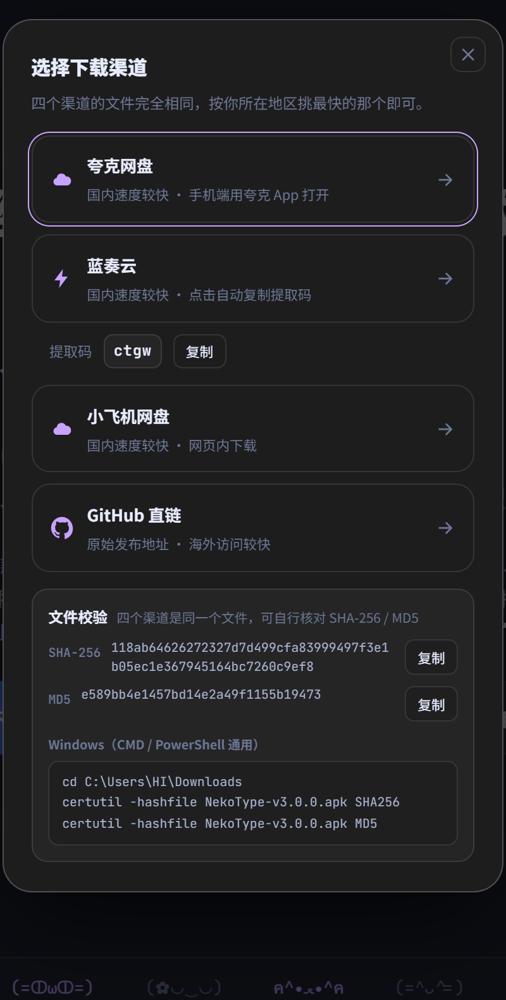
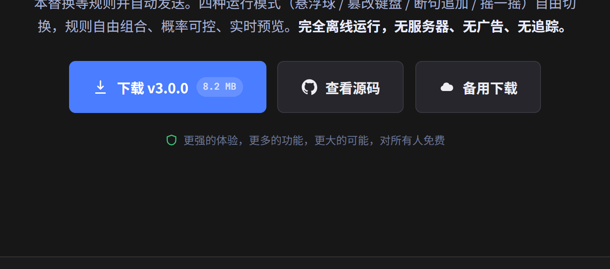
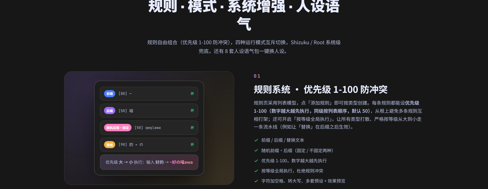
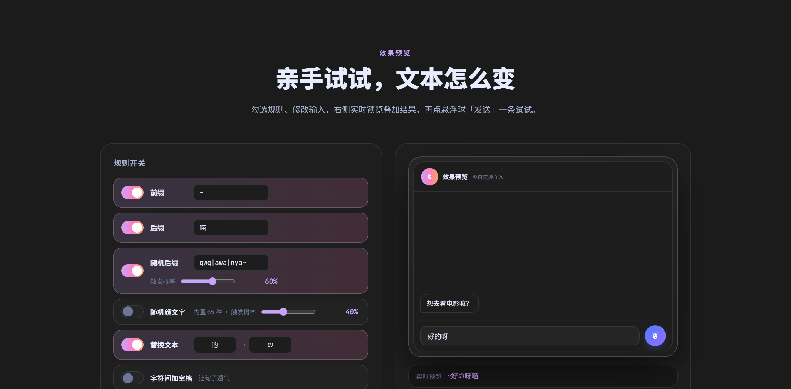
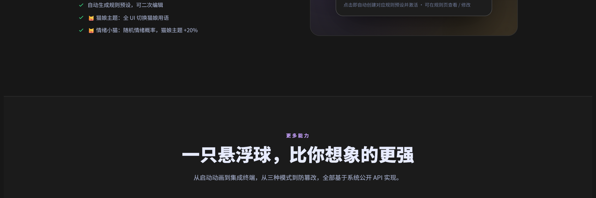
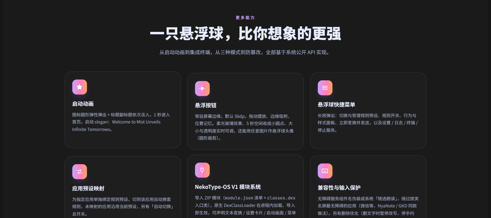

NekoType 新手使用手册
NekoType 是一款运行于 Android 的文本处理工具。悬浮球常驻屏幕边缘，点按后按已配置的规则改写当前输入框内的文本，并触发发送。
本文档覆盖安装、权限配置、运行模式、规则设置、系统级注入与故障排查。无需 root，无需连接电脑。
如何开始
| 你的情况 | 读哪几节 | 用时 |
|---|---|---|
| 刚下载，什么都还没配 | 名词先听懂 → 安装 → 开权限 → 首次使用 | 约 10 分钟 |
| 装好了，但点了没反应 | 开权限 → 故障排查 | 约 3 分钟 |
| 能用了，想配自己的话术 | 规则配置 → 优先级 | 约 8 分钟 |
| 微信里不生效 | 微信适配 | 约 6 分钟 |
| 只想让它在某几个应用里生效 | 应用名单 | 约 3 分钟 |
| 担心隐私 | 隐私说明 | 约 4 分钟 |
术语说明
无障碍（无障碍服务 / Accessibility）
安卓自带的功能，本来是给视障用户读屏幕用的：它能让一个 App 读屏幕上写了什么、替你点按钮。NekoType 就靠它干活，读你正在打字的输入框，改完替你点发送。
- 为什么
- 没有它，App 读不到你在别的应用里打了什么字，也没法替你按发送。
- 不开会
- 主要功能全部失效，只剩摇一摇这种纯手势的半个功能。
- 风险
- 这个权限确实很大，所以只给可信的应用。NekoType 不联网、不保存你的文字，代码开源可查。
- 在哪开
- 设置 → 无障碍 → 已下载的服务 → NekoType → 打开。有的手机叫「辅助功能」，有的在「更多设置」里。
悬浮窗（显示在其他应用上层）
允许应用在其他应用之上绘制界面的系统权限。未授予时悬浮球不会显示。
- 为什么
- 球要盖在微信、QQ、备忘录等任何应用之上，必须拿到这个权限。
- 不开会
- 看不到球，只能靠摇一摇或篡改键盘模式。
- 在哪开
- 设置 → 应用 → NekoType → 权限 → 显示在其他应用上层。也有手机叫「悬浮窗」「后台弹出界面」。
Shizuku
免费的小工具。装它之后，普通 App 能临时拿到接近系统的权限。不用 root、不用刷机。相当于一张随时可撤销的通行证。
- 为什么
- 有些应用（典型是微信）会拒绝无障碍改写，这时必须走系统级「直接注入」，Shizuku 就是那条通道。
- 不开会
- 大部分应用照常能用，只是微信、部分金融类应用里可能改不动。
- 风险
- Shizuku 是知名开源项目，官网和各大应用商店都能下。它每次重启手机后都要重新启动一次，这是它的机制，不是 NekoType 的问题。
- 怎么装
- 见 微信适配，有完整步骤。
Root
手机的最高权限。NekoType 不需要它。手机本来就 root 的，会多一条更稳的注入通道。
- 为什么
- root 通道比 Shizuku 稳，不用每次开机重开。
- 不开会
- 完全没影响，用 Shizuku 或无障碍都能跑。
- 风险
- root 本身有风险（保修、银行 App 检测），跟 NekoType 无关。没 root 别为了它去 root。
规则 / 预设 / 优先级
规则是一条改写动作，比如「结尾加个喵」。预设是一整套规则的组合，比如工作用、聊天用，一键切换。优先级是执行顺序，1–100，数字越大越先跑，默认 50。
- 为什么
- 你会同时开很多条规则，谁先谁后，结果完全不同。
- 例子
- 先跑「的 → の」（优先级 90），再加后缀「喵」（优先级 50），结果是
好の喵；反过来会变成好喵の这种怪东西。
前缀 / 后缀 / 随机尾缀 / 替换
最常用的四种。前缀加在开头（~好的），后缀加在结尾（好的喵），随机尾缀每次从候选里抽一个（好的qwq、好的awa），替换把某个字换成别的（的 → の）。
- 为什么
- 这四种能覆盖九成的「让话变个味儿」需求，其余类型（颜文字、加空格、转大写）都是锦上添花。
人设语气包
配好的一整套规则，比如猫娘、古风文言、阴阳怪气。点一下换成这套，不用自己一条条加。
- 为什么
- 新手最快见效的玩法：先套人设，觉得哪里不合适再去规则页改细节。
篡改键盘 / 断句追加 / 摇一摇
三种不用点球的触发方式。篡改键盘：打字过程中就改，用的还是系统输入法。断句追加：打完一句、敲了标点才改。摇一摇：摇一下手机，改完直接发。
- 为什么
- 点球毕竟多一步，聊天时想更顺就用这三种。
- 注意
- 这四种（含悬浮球）同时只能开一个，在「模式」页切换。
设备管理员 / 电池优化 / 自启动
三个保活设置。设备管理员让 App 不容易被随手卸载，电池优化白名单告诉系统别为省电杀掉它，自启动是开机自动拉起。
- 为什么
- 安卓杀后台很凶，这几项不开，用一阵子悬浮球就没了。
- 怎么开
- 见 故障排查 里「用一会儿就失效」那一行。
终端（Mist）与模块（NekoType-OS）
两个进阶功能，不打开也不影响日常使用。终端是内置命令行窗口，模块是能导入的扩展包，用来加新能力。
- 为什么
- 不装、不用，App 的功能一点不少。
- 风险
- 模块和 App 同权限运行，只装你信得过的来源。
获取安装包
| 渠道 | 地址 | 说明 |
|---|---|---|
| 夸克网盘 | https://pan.quark.cn/s/2e123c8371f4 |
手机端用夸克 App 打开 |
| 蓝奏云 | https://wwasm.lanzouq.com/iGiNH4g6hb5a |
提取码 ctgw（点链接会自动复制） |
| 小飞机网盘 | https://share.feijipan.com/s/abzcBiq1 |
网页内直接下载，不用装 App |
| GitHub 直链 | NekoType-v3.0.0.apk |
原始发布地址，海外访问更快 |

NekoType-v3.0.0.apk，大小 8.2 MB。若文件名含 2.9.x，说明是旧版本，请返回官网重新获取。哈希核对见 文件校验。安装
- 点开下载好的 APK。系统会弹「禁止安装未知应用」，点设置 → 打开允许来自此来源，返回再点一次安装。
- 装完先打开一次，让它把初始配置写完（会有一段启动动画），别急着去开权限。
- 提示「应用未安装」：多半是之前装过签名不同的旧版，先去设置里卸载旧版再装。
能装在哪
- Android 8.0 及以上（2018 年之后的手机基本都满足）
- 不需要 root、不需要刷机、不需要连电脑
- vivo / iQOO / 小米 / 华为可能多弹一个「风险应用」提示，选「仍然安装」
权限配置
| 权限 | 用来看什么 | 不开的后果 | 在哪开 |
|---|---|---|---|
| 悬浮窗 | 把悬浮球显示在所有应用上面 | 看不到球，没法点 | 设置 → 应用 → NekoType → 权限 → 显示在其他应用上层 |
| 无障碍 | 读当前输入框的文字、替你点发送 | 主要功能全失效 | 设置 → 无障碍 → 已下载的服务 → NekoType → 打开 |
| 通知（建议） | 前台服务常驻，不容易被系统杀 | 后台待一会儿就失效 | 设置 → 应用 → NekoType → 通知 → 允许 |
建议同时完成的设置
- 加进电池优化白名单：设置 → 电池 → 电池优化 → 找 NekoType → 选「不优化」。有些手机叫「应用省电策略」，选「无限制」。
- 打开自启动：设置 → 应用管理 → NekoType → 自启动 / 关联启动 → 全部允许。vivo、iQOO、OPPO、小米尤其要开。
- 在最近任务里锁一下：把 NekoType 卡片下拉锁定（小锁图标），免得「一键清理」把它清掉。
确认权限已生效
回 NekoType 首页，权限区应该全是绿色「已授权」。显示未授权的，点进系统页面再开一次；有的系统设置页会显示已保存但实际没生效。
首次使用
- 打开任意可输入文本的应用。建议先用系统「备忘录」，改写结果不会真正发送。
-
在输入框里打几个字，比如
好的。先别按发送，让光标停在输入框里。 - 点屏幕上那个悬浮球。点了以后会出现三种正常反应之一：输入框里的字变了、字变了并且发出去了、或者弹一个提示说「无障碍未授权」。如果是第三种，回 开权限。
- 看到字变了，就说明你已经会用 80% 了。剩下的只是决定改成什么样，也就是规则。

点了球完全没反应？先试这三下
- 再点一次，看手机上有没有「NekoType 已启动」之类的通知。有通知说明服务在跑，问题出在无障碍权限。
- 去设置里把无障碍关掉、再打开一次（这一步能解决一半以上的「突然失灵」）。
- 更换应用验证：在系统「备忘录」中再次点按。若备忘录可用而微信无响应，属于微信拒绝无障碍改写，需配置 Shizuku 通道。
运行模式
| 模式 | 你要做什么 | 体验像什么 | 适合谁 |
|---|---|---|---|
| 悬浮球 | 打完字，点一下球 | 手动、可控，改完你能立刻看到结果再发 | 所有人；新手强烈建议从这个开始 |
| 篡改键盘 | 照常打字，什么都不用点 | 字打着打着，结尾自己多了个后缀 | 聊天频繁、嫌点球麻烦的人 |
| 断句追加 | 打完一句，敲个标点 | 一句话完整了才变，不会打断你打字 | 写长句、发消息比较整的人 |
| 摇一摇 | 摇一下手机 | 不用找球、不点屏幕，改完直接发 | 单手操作、球被挡住、开车不便时 |

三个容易被误解的点
- 「篡改键盘」不是换输入法。你还在用原来的搜狗 / 百度 / Gboard，NekoType 只是在中间插了一道改写。
- 「摇一摇」有三档灵敏度：轻摇约
5.0 m/s²、标准约10.0 m/s²、用力约13.5 m/s²。地铁上手抖就调「用力」，躺着刷手机用「轻摇」。 - 开篡改键盘或摇一摇后，球会自己藏起来，避免重复触发。想点球就切回悬浮球模式。
规则配置
先想清楚要几步
这是两个动作。先把「的」换成「の」，再在结尾加「喵」。所以要建两条规则。
- 打开规则页，点「添加规则」，类型选替换文本。查找填
的，替换为填の。优先级先给90。 - 再添加一条，类型选后缀。内容填
喵。优先级给50。 - 回输入框打「好的」，点球。你应该看到
好の喵。 - 如果看到的是
好喵の，说明顺序反了：把「替换」的优先级调到比「后缀」大（数字更大＝更先跑）。

七种规则分别干什么
| 类型 | 作用 | 例子 |
|---|---|---|
| 前缀 | 加在开头 | ~ → ~好的 |
| 后缀 | 加在结尾 | 喵 → 好的喵 |
| 随机后缀（固定） | 从固定候选中随机取一个 | qwq|awa|nya~ → 好的awa |
| 随机后缀（不固定） | 每次都重新抽，不固定顺序 | 连着发三条，后缀都不一样 |
| 替换文本 | 把指定字换成别的 | 的 → の |
| 随机颜文字 | 按概率追加内置颜文字（65 种） | 触发概率 40% 就差不多三条中一条 |
| 字符加空格 | 字与字之间插空格 | 好 的 呀 |
配错了怎么退
- 每条规则前面都有开关，先关掉而不是删掉，方便对比。
- 一整套配坏了，直接切回另一个预设，原来那套还在。
- 配置混乱时，可在设置中使用「导出 / 导入全部配置」；建议先导出备份再调整。
执行优先级
三条规则
- 范围 1–100，数字越大越先执行，默认 50。
- 数字相同时，按列表从上到下执行。
- 执行是串行的：前一条的输出就是后一条的输入。
举三个真实的坑
| 你配的 | 实际结果 | 为什么 |
|---|---|---|
替换 的→の 优先级 90；后缀 喵 优先级 50 |
好の喵 |
先替换，再加后缀，正常 |
前缀 ~ 优先级 50；替换 的→の 优先级 90 |
~好の |
替换先跑，前缀后加，看着也正常 |
加空格 优先级 90；后缀 喵 优先级 50 |
好 的 呀 喵 |
先加空格，再在结尾加「喵」，于是「喵」前面多了空格 |
「按等级全局执行」是干什么的
默认情况下，同类型规则会聚在一起跑。打开这个开关后，所有类型打散，严格按优先级从大到小排成一条流水线。适合规则很多、你希望顺序完全可控的时候。
举例：你希望「替换」一定在「后缀」之后生效，那就给替换一个更小的优先级，并打开全局执行。
人设语气包
内置 8 套：萝莉语、古风文言、译制片腔、阴阳怪气、火星文、病娇、雌小鬼、猫娘。在首页点一下就会自动创建对应的规则预设并激活，不需要手动加规则。

套完不满意怎么办
- 去规则页，你会看到这套人设对应的几条规则，可以改内容、改优先级、单独关掉某条。
- 改完可以另存为新预设，原来那套不会被覆盖。
- 猫娘主题会把整个 App 的界面用语也换成猫娘腔，同时「情绪小猫」的随机情绪概率 +20%。
微信适配
先确认你是哪种情况
| 症状 | 结论 |
|---|---|
| 备忘录可改写，微信点按无响应 | 属正常现象，按下列步骤配置 Shizuku |
| 所有应用都没反应 | 不是微信的问题，回去看 开权限 |
| 微信里能改，但发送失败 | 检查是否被拦了「剪贴板 / 无障碍」提示；升级到 v3.0.0（已修复「写回失败仍提示已变换」） |
装 Shizuku（免 root）
- 装 Shizuku。从应用商店或官网装，装完先别开，它会引导你选启动方式。
- 打开手机的「无线调试」：设置 → 开发者选项 → 无线调试（开了它才能免电脑启动 Shizuku）。没看到开发者选项就去「关于手机」连点版本号 7 次。
- 在 Shizuku 里选「通过无线调试启动」，按它的提示配对（会要你输一个 6 位配对码）。配对成功后 Shizuku 显示「已启动」。
- 回到 NekoType，在 Shizuku 那一栏点授权，或者直接在首页点「一键授权所有权限」。授权成功的标志是那一栏变成「已连接」。
为什么这条路能过微信
微信按「无障碍服务的类名」判断要不要屏蔽。NekoType 把无障碍服务伪装成系统自带的「随选朗读」（SelectToSpeakService），微信对系统服务放行，于是能读到输入框。
伪装后仍被拒时，Shizuku 通道绕过无障碍，直接把文本写进输入框，不弹窗、不经过剪贴板。
nekotype@shizuku
$ neko --silent inject
✓ 无障碍通道被拒 → 切换 Shizuku
✓ input text: "~好の喵awa" (17ms)
✓ 无弹窗 · 无剪贴板 · 已发送应用名单
| 模式 | 含义 | 适合 |
|---|---|---|
| 黑名单 | 名单里的应用不自动改写，其他都改 | 默认推荐。把银行、办公、验证码类应用加进去 |
| 白名单 | 只改名单里的应用 | 只想在微信 / QQ 里生效，其他一律不动 |
- 打开「应用名单」页，它会列出手机上所有已安装应用。
- 用搜索框找应用名，勾选。
- 在页面顶部切换黑名单 / 白名单模式。
- 注意：手动点球始终不受名单限制，名单只管自动改写。
预设映射：切到某个应用就自动换一套规则
比如「微信里用猫娘那套，工作群里用简洁那套」。在「应用预设映射」里给应用绑定预设，切过去自动生效；没绑定的应用沿用当前预设。上面有个「自动切换」总开关，关掉就全部用当前预设。
外观与悬浮球
| 你遇到的问题 | 怎么调 |
|---|---|
| 球太小不好点 | 「悬浮球大小」往大调（默认 56dp）；关掉「5 秒空闲收缩」 |
| 球挡住了内容 | 把球拖到屏幕边缘，会自动吸附；或调低不透明度；或直接切摇一摇模式 |
| 想要自己的头像 | 「悬浮球头像」选任意图片，会自动圆形裁剪 |
| 界面太亮 / 太花 | 设置 → 主题，六套可选：深色 / 浅色 / 跟随系统 / 星空 / 猫娘 / 前苏联 |
| 想换背景图 | 设置 → 外观 → 自定义背景，选图片即可（v3.0.0 修复了换图不生效） |

长按球能干什么
长按悬浮球弹出快捷菜单：切换 / 管理规则预设、规则开关、行为与样式、立即变换并发送、设置、日志、终端、停止服务。日常高频操作都在这。
隐私说明
安装包里没有申请网络权限。系统层面它连不上网，所以不存在偷偷上传这回事。断网、飞行模式下功能照常。
| 你担心的 | 实际情况 |
|---|---|
| 会不会读我的聊天记录 | 不会。它只读当前聚焦的输入框里还没发出去的那段文字，看不到历史消息列表 |
| 会不会读密码框 | 不会。密码框属于安全输入，无障碍读不到 |
| 会不会存我的文字 | 不会。处理完立刻丢弃，不写日志、不写文件 |
| 会不会上传 | 不会。没有网络权限，没有服务器 |
| 会不会有广告 / 统计 SDK | 没有。安装包里没有任何追踪 SDK |
| 我能自己验证吗 | 能。代码在 GitHub 完全开源，也可以看安装包的权限清单 |
它确实有的能力，以及边界
- 读当前输入框：为了改写。读不到就用不了，这是它存在的理由。
- 模拟点击发送：替你按那个发送按钮。你在屏幕上能看到它按了。
- 悬浮窗：只用来显示球，不截屏、不录屏。
- 设备管理员（可选）：只用于「防误卸载」和隐藏模式，不用于其他任何事。不想用就别开。
集成终端
「终端」页是一个真的命令行（用 Termux 的 PTY 引擎，不是假的），内置 460+ 命令，另有几个猫系命令：
nekosay 你好 # 猫娘语音播报
nekomood # 看当前情绪状态
catbomb # 猫猫炸弹
neko feed / play / pet # 喂食 / 陪玩 / 撸猫- 常用命令和电脑上差不多：
lscatpsgrep - 字体 JetBrains Mono，字号 10–24sp 可调
- 面板透明度和字体颜色都能调
- 不需要 root 也能用，能做什么取决于系统权限
模块扩展
一个模块长什么样
my-module.zip
├─ module.json # 清单：名字、版本、入口类、声明什么能力
└─ classes.dex # 入口代码能扩展什么
- 文本变换（参与规则流水线，等于加了一种新规则）
- 设置页里的新卡片
- 启动画面
- 悬浮球菜单里的新项目
- 界面覆盖层
怎么装
- 拿到
.zip模块包（不要解压）。 - 设置 → 模块 → 导入，选那个 zip。
- 提示「导入成功，重启应用后生效」，按提示重启一次。
- 不用了就在同一页关掉或删除，模块之间互不影响。
故障排查
| 现象 | 原因 | 怎么解决 |
|---|---|---|
| 点球完全没反应 | 无障碍服务被系统关了（最常见） | 设置 → 无障碍 → NekoType 关掉再开；再把电池优化设为不优化 |
| 球不见了 | 被「清理」杀了；或悬浮窗权限被收回 | 重开 App；检查悬浮窗权限；最近任务里锁定它 |
| 用一会儿就失效 | 后台被系统回收 | 电池优化白名单 + 自启动 + 通知权限，三件一起开 |
| 球点了偶尔才生效 | 球处于「收缩成小圆点」状态，点到旁边了 | 点小圆点本体；或关掉空闲收缩；或把球调大 |
| 微信里改不动 | 微信拒绝无障碍改写 | 装 Shizuku；v2.9.0 起微信适配已是全局默认 |
| 字改了但没发出去 | 发送被目标应用拦了 | 开「静默修改」走 Shizuku；看日志页的失败原因 |
| 后缀越叠越多（喵喵喵） | 旧版的累加 bug | 升级到 v3.0.0（已修复标点结尾 / 颜文字场景） |
| 连点发送发了一串 | 旧版篡改键盘的连发 bug | 升级到 v3.0.0 |
| 关掉服务球又自己回来 | 旧版服务复活 bug | 升级到 v3.0.0 |
| 整屏点不动 | 旧版规则编辑的遮罩残留 | 升级到 v3.0.0；临时可按返回键退出编辑态 |
| 换背景 / 换头像不生效 | 旧版 bug | 升级到 v3.0.0 |
| 两条规则互相打架 | 优先级没拉开 | 看 优先级；或打开「按等级全局执行」 |
| Shizuku 显示已断开 | 重启过手机，或 Shizuku 被杀 | 重新用无线调试启动 Shizuku，回 NekoType 重新授权 |
| 开机后不自动工作 | 没开自启动 | 系统「自启动管理」里允许 NekoType |
| 不想用了，怎么彻底停 | — | 设置里「停止服务」→ 系统无障碍里关掉它 → 有设备管理员的先在「设备管理应用」里取消激活，否则卸不掉 |
还是不行，怎么反馈
- 去「日志」页，把报错那几行复制出来（可以先截图）。
- 记下三件事：手机型号 + 系统版本、NekoType 版本号、出问题的那个应用名。
- 到 GitHub Issues 提，或者发邮件 TR114512@qq.com。带上日志，定位会快很多。
版本历史
仅列主要更新，完整列表见官网首页「变更记录」。
| 版本 | 要点 |
|---|---|
| v3.0.0 | 检测到「喵喵助手」「NyaNote」时用猫娘语气提示卸载；启动页标语「迷雾散尽，未来已来」；启动、页面切换、悬浮球改弹性动效。修复：篡改键盘删字恢复慢、连点无限连发、每字一条消息、服务复活、遮罩残留、换背景失效、写回失败误报、后缀越叠越多；Shizuku 权限声明补齐 |
| v2.9.9 | 撤销多语言实验回到 7 种语言；修静默修改重进反复提示已开启；模块导入改为「重启后生效」；隐藏删除优化与语音输入优化入口 |
| v2.9.1 | 密码锁定细化到各页面（5 分钟会话）；新增「安全防护」拦截系统无障碍页；语言选择器重做；移除隐藏模式 |
| v2.9.0 | 微信适配成全局默认（无障碍伪装随选朗读）；新增功能体检；修剪贴板漏洞与一键授权逻辑漏洞 |
| v2.8.5 | 摇一摇模式（三档强度）；权限自动巡检每 5 分钟补授权；随机前缀 / 后缀支持互斥与并发 |
| v2.8.1 | NekoType-OS V1 模块化扩展：可导入 ZIP 模块 |
| v2.8.0 | 应用名单支持黑 / 白名单；应用预设映射 |
| v2.7.9 | 打开应用自动用 Shizuku 授权全部权限；许可证改为 GPL-3.0 |
| v2.5.5 | 首个公开版本：悬浮球改写发送、四类规则、Shizuku 与 Root 双通道 |
文件校验
核对哈希值，确认安装包未被替换。
| 算法 | 值 |
|---|---|
| SHA-256 | 118ab64626272327d7d499cfa83999497f3e1b05ec1e367945164bc7260c9ef8 |
| MD5 | e589bb4e1457bd14e2a49f1155b19473 |
Windows（CMD / PowerShell 通用）
cd C:\Users\HI\Downloads
certutil -hashfile NekoType-v3.0.0.apk SHA256
certutil -hashfile NekoType-v3.0.0.apk MD5